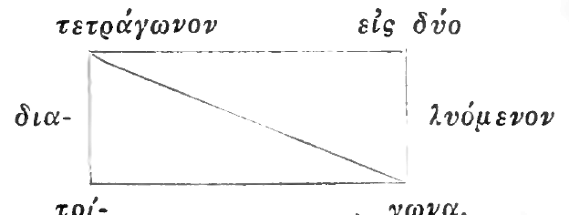
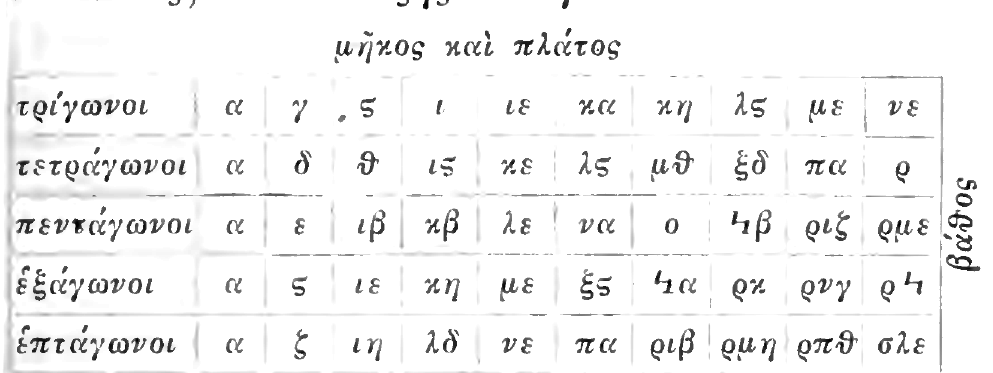

Chapter 12: Decomposition of Squares and Polygons into Triangles — Greek (Hoche 1866)¶
Ἀριθμητικὴ Εἰσαγωγή, Book II, Ch. 12 (ed. R. Hoche, Teubner, 1866)
ιβ. Καὶ περὶ μὲν τῆς τῶν πολυγώνων φύσεως τῶν ἐπιπέδων ἱκανὰ ταῦτα ὡς ἐν πρώτῃ εἰσαγωγῇ· ὅτι δὲ συμφωνοτάτη διδασκαλία ἡ περὶ αὐτῶν τῇ γραμμικῇ καὶ οὐκ ἀπᾴδουσα, δῆλον ἂν εἴη οὐ μόνον
f. 0114 · p. 96

ἐκ τῆς σχηματογραφίας τῆς καθʼ ἕκαστον, ἀλλὰ κἀκεῖθεν· πᾶν τετράγωνον σχῆμα διαγωνίως διαιρεθὲν εἰς δύο τρίγωνα λύεται καὶ πᾶς τετράγωνος ἀριθμὸς εἰς δύο τριγώνους συνεχεῖς λύεται καὶ ἐξ ἄρα δύο τριγώνων συνεχῶν συνέστηκεν· οἷον τρίγωνοι μέν εἰσιν α, γ, ϛ, ι, ιε, κα, κη, λϛ, με, νε καὶ οἱ ἑξῆς, τετράγωνοι δὲ α, δ, θ, ιϛ, κε, λϛ, μθ, ξδ, πα, ρ.

